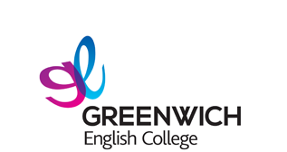

 【オーストラリア/シドニー】
大規模校でありながらアットホームな環境が魅力。選択授業で効率的に英語を身につけよう。
Greenwich / グリニッジGreenwich English College (グリニッジ・イングリッシュ・カレッジ)

大規模校でありながらアットホームな環境が魅力。
選択授業で効率的に英語を身につけよう。
シドニー中心であるタウンホール駅から徒歩5分の場所にあり、ショッピングセンターやカフェなど、若者に人気のエリアです。
通常授業5時間＋会話クラブ1時間、がっつり勉強できる体制が整っているので本気で英語を身につけたい人にオススメ！
様々な英語試験の公式受験センターに認定されているので、慣れた空間で落ち着いて試験に挑むことが出来ます。
豊富な選択授業を同じ値段で受講可能！変更も自由なタイミングで行えます。
レベルアップテストも毎週行われるので効率的に英語学習！
カウンセラーがとても親身になって話を聞いてくれるから、心配性の人でも安心！
日本語で相談できるのもポイント！
授業中は真剣に、放課後週末は思いっきり楽しもうをモットーに、様々な参加型アクティビティが用意されています！
＜Greenwich English College - Study English in Sydney＞
＜生徒の声 - シドニーの日本人学生 - グリニッチカレッジで英語を学ぶ＞
＜現地スタッフからのコメント＞
英語の必要性は日々高まっています。なぜなら人々や各国が今後の成長の機会を探し求めているからです。専門分野だけにとどまらず、各個人においても英語は重要になってきています。
目標を決めましょう...実際の社会で通用する英語を身につけましょう。Greenwichにはたくさんのコースがあり、多くの可能性があなたを待っています。
海 外に出ることは第一歩に過ぎません－新しい環境とどう向き合いますか？...
滞在期間にかかわらず、教室、職場、オーストラリアの身の回りの環境での一瞬一瞬を大切にし、将来の夢につなげましょう。言語を学ぶだけでなく、他の文化 をもつ人々がどう考え、行動し、成長していくのかを知ることはあなた自身を成長させ、国際人になるための大きな助けになるでしょう！
恐れずにどんどん話しましょう...できる限りたくさん間違えましょう。間違えることなくして英語の習得はありえません。
Greenwichはあなたが知らなかった新しい可能性へのドアを開きます。
チャレンジしましょう:)
会話クラブを使ってレベルアップ！
通常授業5時間＋会話クラブ1時間、がっつり勉強できる体制が整っているので本気で英語を身につけたい人にオススメ！
キャンパス内で各種資格を受講できる
様々な英語試験の公式受験センターに認定されているので、慣れた空間で落ち着いて試験に挑むことが出来ます。
オーストラリア国内最大級の選択授業数
豊富な選択授業を同じ値段で受講可能！変更も自由なタイミングで行えます。
レベルアップテストも毎週行われるので効率的に英語学習！
大規模なのにアットホーム、生徒のケアもバッチリ
カウンセラーがとても親身になって話を聞いてくれるから、心配性の人でも安心！日本語で相談できるのもポイント！
週末アクティビティに参加しよう!
授業中は真剣に、放課後週末は思いっきり楽しもうをモットーに、様々な参加型アクティビティが用意されています！